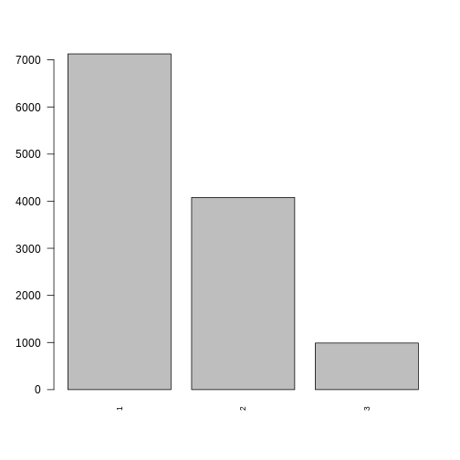
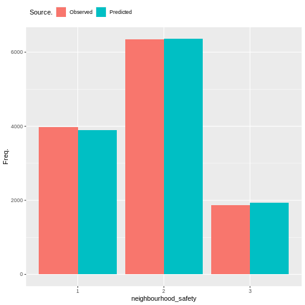
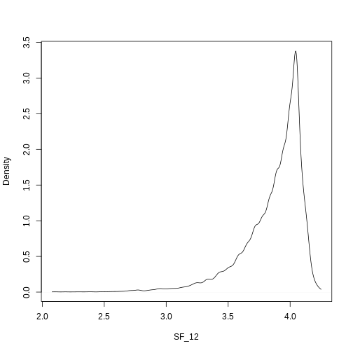

Loneliness
Introduction
Prediction of ordinal loneliness state.
Methods
What methods are used? Justification due to output data type. explanation of model output.
#discrete_barplot(obs, 'loneliness')
order <- c(1, 2, 3)
discrete_barplot(obs, order)

Fig. 7 plot of chunk loneliness_data
Data
What variables are included? Why is this output chosen. What explanatory variables are used and why are they chosen
Results
What are the results. Coefficients tables. diagnostic plots. measures of goodness of fit.

Fig. 8 plot of chunk housing_output
plot_rfo_importance(model)

Fig. 9 plot of chunk unnamed-chunk-1